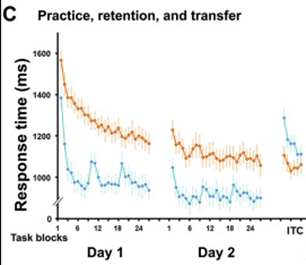

How to Learn the Piano Faster with the Interleaving Effect
In a
previous post I talked about how there is a dichotomy between your
performance and what you’ve actually learned in piano learning.
Another case where this shows up in piano learning is the interleaving effect.
The interleaving effect is when you practice different things in a mixed-up
order instead of practicing them one at a time. It's like if you were learning
how to ride a bike, but instead of practicing just going straight all the time,
you practiced turning left, turning right, and going straight all mixed together.
This might feel harder at first, but it actually helps you learn better and remember
what you learned longer.
What this can look like in piano learning is instead of practicing a single scale
over and over again (we’re all guilty of this) it’s actually more effective to
practice multiple scales at one time. Whether you’re trying to learn simple piano
chords for beginners or imagine you’re learning the C, G, and E major scales. You
could do blocked practice where you spend 5 minutes with C, then 5 minutes with G,
and then 5 minutes with E. This is how people typically practice. Or you could
randomly mix the practice over 5 minutes so the order might look like G C E C G E G E C.
The latter, interleaved practice will create better learning in the long run. One illusion
that the blocked practice creates is that you are initially better than the interleaved
practice schedule. However, come back the next day and if you practiced with an interleaved
schedule, you’ll do better than someone who hadn’t. This creates a gap between what we call
a judgment of learning (your metacognitive assessment of how much you’ve learned) and what
you’ve actually learned.
What this looks like is the following graph below from
Lin et al., (2018).
Imagine the goal for a task is to type a sequence as fast as possible.
Initially during training, if you train through blocked practice,
you’ll perform better than if you had trained through interleaved practice.
However, over a long period of time the interleaved practice will result in superior retention.

There are two major factors in why the interleaving effect exists: attention and memory.
The discrimination hypothesis supposes that interleaving creates a stronger retrieval
cue to pull out the memory. For example, in blocked practice the retrieval cue for the
C major scale is weaker than in interleaved practice. This is because of stimulus attenuation,
the more a stimulus is shown, the weaker response from the brain you get. You can think of
this as like when you turn on some white noise in your room. At first you notice it, but it
quickly fades into the background because the stimulus over time produces a weaker neural
response over time.
In summary, interleaving your practice will yield superior retention than blocked or massed
practice and make piano music easy to play. Although there is an illusion of quicker learning
with blocked practice, remember that if you come back the next day you’ll be worse off than if
you did interleaved practice. At MIDIScale, we’re working on setting up a program that will
automatically incorporate this with scales, arpeggios, finger strengthening exercises, and more!
Join the mailing list to gain access to our bi-weekly newsletter and software updates!
This site is protected by reCAPTCHA and the Google Privacy Policy and Terms of Service apply.